Index
1. Lecture: 7-1
- Prerequisites for this lecture are:
6-1, 6-2 and 6-3.
2. Moving along a line
- consider the problem of making a
barrels appear to roll across a plank
-
this is complicated by the issue of the ramp gradient
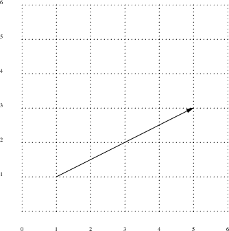
3. Bresenham’s line algorithm
- fortunately Bresenham discovered an
algorithm which given two points
-
determines the elements of a 2-dimensional grid that should
be selected to best approximate the line
-
Bresenham’s line algorithm also uses integer
arithmetic which adds to its complexity
4. y = mx + c
- returning to the problem of making a
barrel roll down a plank
- we know the x
position, but we need to compute the y value
- we
know the start and end points of the ramp
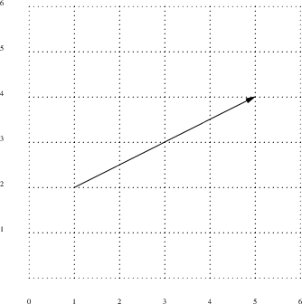
- in the previous slide the
start position is (1, 2) and the end position is (5, 4)
-
the dx value is 5-1 = 4
- the dy value is 4-2 = 2
-
therefore our gradient
 is
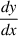
is
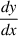
- we need to calculate

- we know the point (1, 2) exists on the line
- using
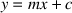
-
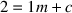
-
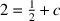
-
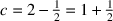
- we could use this formula to calculate the
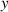
value given an
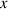
value
-
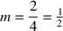
-
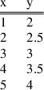
- notice how we need floating point values to compute
it
- also notice how we calculated the
gradient
- Bresenham’s algorithm hunts for
the correct gradient by using integer arithmetic and by
manipulating the numerator and denominator of the fractional
value of
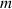
Index
1. Lecture: 7-1
2. Moving along a line
3. Bresenham’s line algorithm
4. y = mx + c
Index
This document was produced using
groff-1.22.